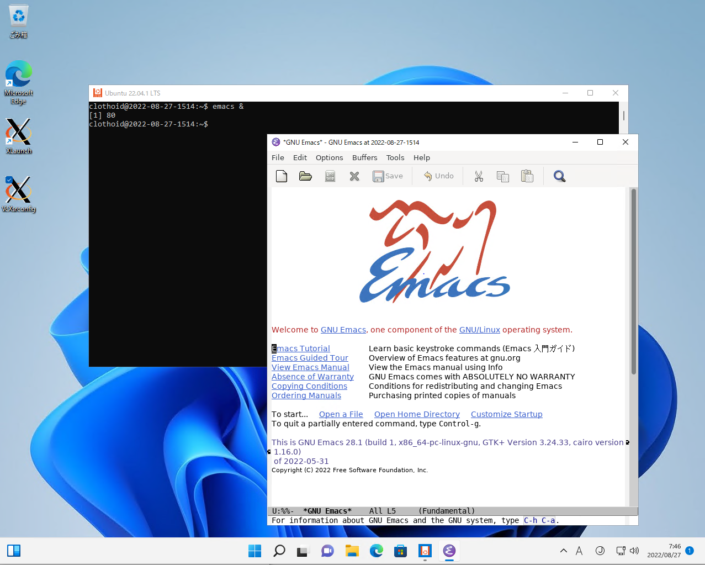

emacs28 on Ubuntu 22.04 with WSL2 in Windows 11

1. 環境
- Windows 11 Pro: 21H2 22000.856
- VcXsrv: 64.1.20.14.0
- Ubuntu: 22.04 LTS
- emacs: 28.1
2. 手順
- VcXsrv のインストール
- https://sourceforge.net/projects/vcxsrv/
- vcxsrv-64.1.20.14.0.installer.exe
- WSL2の準備(手動インストール)
- 管理者権限でPowerShellを起動
[Linux用Windowsサブシステム]有効化のため、以下を実行
dism.exe /online /enable-feature /featurename:Microsoft-Windows-Subsystem-Linux /all /norestart
Virtual Machine Platform の有効化のため、以下を実行
dism.exe /online /enable-feature /featurename:VirtualMachinePlatform /all /norestart
- Linux カーネル更新プログラム パッケージのインストール
WSL 2 を既定のバージョンとして設定
wsl –set-default-version 2
- Ubuntu のインストール
- Microsoft Store から、Ubuntu 22.04 を入手
- Ubuntuコンソールを起動
- 言語の選択(デフォルトのまま)
- ユーザー名とパスワードの設定
- マウント場所の設定(デフォルトのまま)
- [Setup Complete]の文字をしばらく眺めて、[Reboot Now]を選択
- Ubuntuのアップデートと設定
最新化
sudo -E apt update sudo -E apt upgrade
localeや日本語まわり
sudo -E apt install language-pack-ja language-pack-gnome-ja sudo update-locale LANG=ja_JP.UTF-8 sudo -E apt install manpages-ja manpages-ja-dev sudo dpkg-reconfigure tzdata
emacsのインストール
sudo -E apt remove --autoremove emacs emacs-common sudo -E add-apt-repository ppa:kelleyk/emacs sudo -E apt update sudo -E apt install emacs28 emacs28-el sudo -E apt install cmigemo
おまじない
sudo -E apt install gconf2 sudo dbus-uuidgen --ensure
- ssh ポートフォワード接続無効化
- コマンドプロンプトから wf.msc を起動
- [受信の規則]をクリック
- [VcXsrv windows xserver]の行がないことを確認
- VcXsrv を起動
- 基本的に[Next]で設定
- [Additional parameter for VcxSrv] の欄に [-ac -nowgl]を入力
- [Set Configure]をクリックし、適当な場所に設定ファイルを保存しておくと次回からそれをクリックで可能(VcXsrvConfig)
- [ファイアウォールの通信許可設定ダイアログ画面] にて [パブリックネットワーク] のチェックを確認
- 通信を許可
~/.bash_profile の設定
if which tasklist.exe > /dev/null && ! tasklist.exe | grep -F -q 'vcxsrv.exe'; then ( cd '/mnt/c/Program Files/VcXsrv' ./vcxsrv.exe :0 -multiwindow -clipboard -noprimary -wgl > /dev/null 2>&1 & ) fi if [ "$INSIDE_EMACS" ]; then TERM=eterm-color fi umask 022 if [ -z "$DISPLAY" ]; then if uname -v | grep -q 'Microsoft'; then export DISPLAY=:0 else if ss -lt4 | grep -q '127.0.0.1:6020'; then export DISPLAY=:20 else # export DISPLAY=$(awk '/^nameserver/ {print $2; exit}' /etc/resolv.conf):0.0 export DISPLAY=$(ip route | awk '/^default/ {print $3; exit}'):0.0 fi fi fi # Emacs の起動時に「WARNING **: Couldn't connect to accessibility bus: ...」というワーニングが出力される場合に設定 # export NO_AT_BRIDGE=1 # Emacs の起動時に「libGL error: No matching fbConfigs or visuals found / libGL error: failed to load driver: swrast」というエラーが出力される場合に設定 export LIBGL_ALWAYS_INDIRECT=1 # Emacs の起動時に gigacage に関するエラーが発生する場合に設定 # export GIGACAGE_ENABLED=no- マシンの再起動
- VcXsrvConfigを起動
- Ubuntuを起動
- emacs を起動